Explore the best of Indian cooking with these top-rated recipes for curries, tandoori chicken, chutneys, and more flavorful faves.
Whats on your miend ?
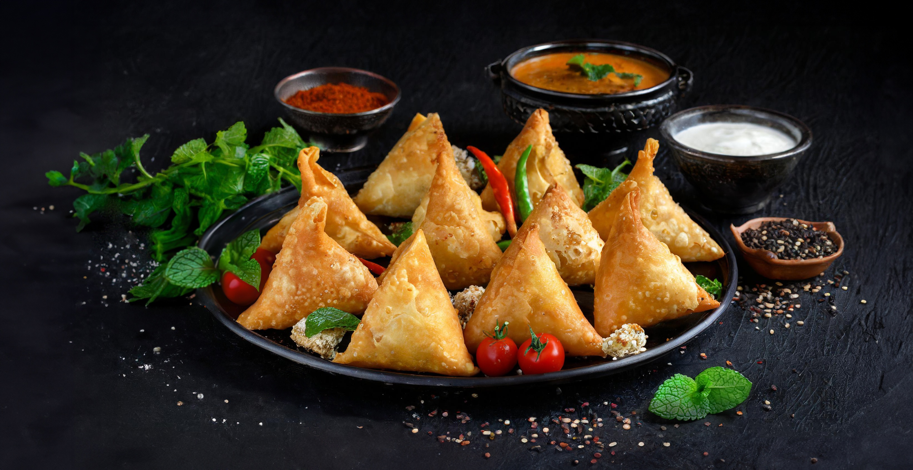
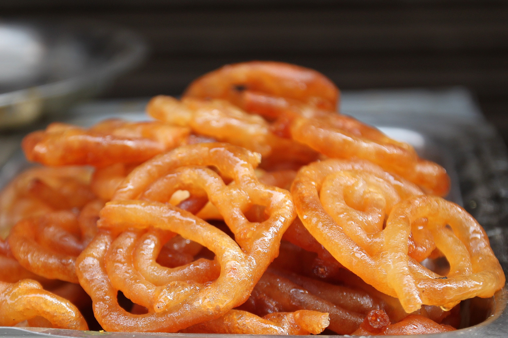
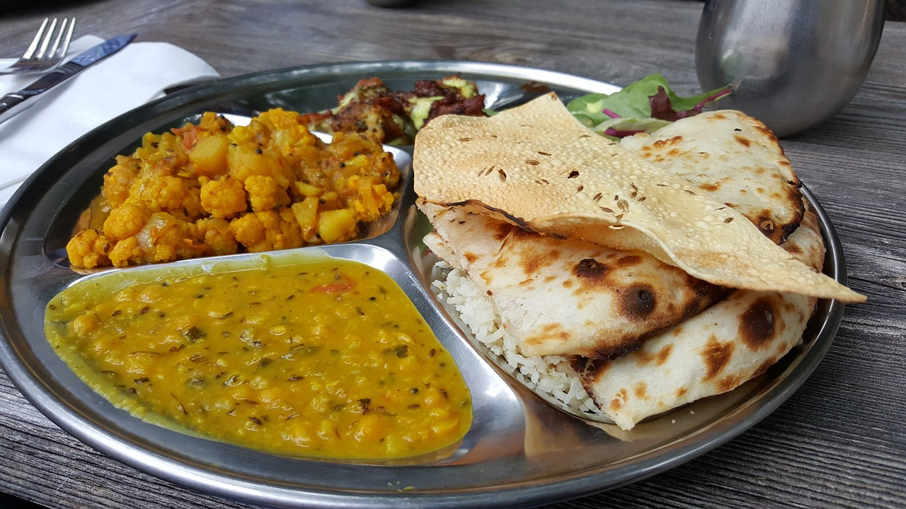
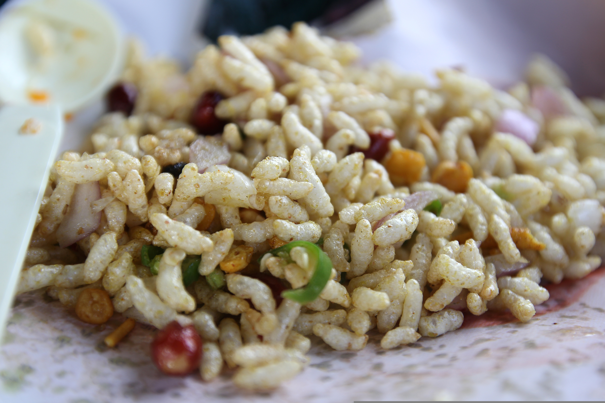
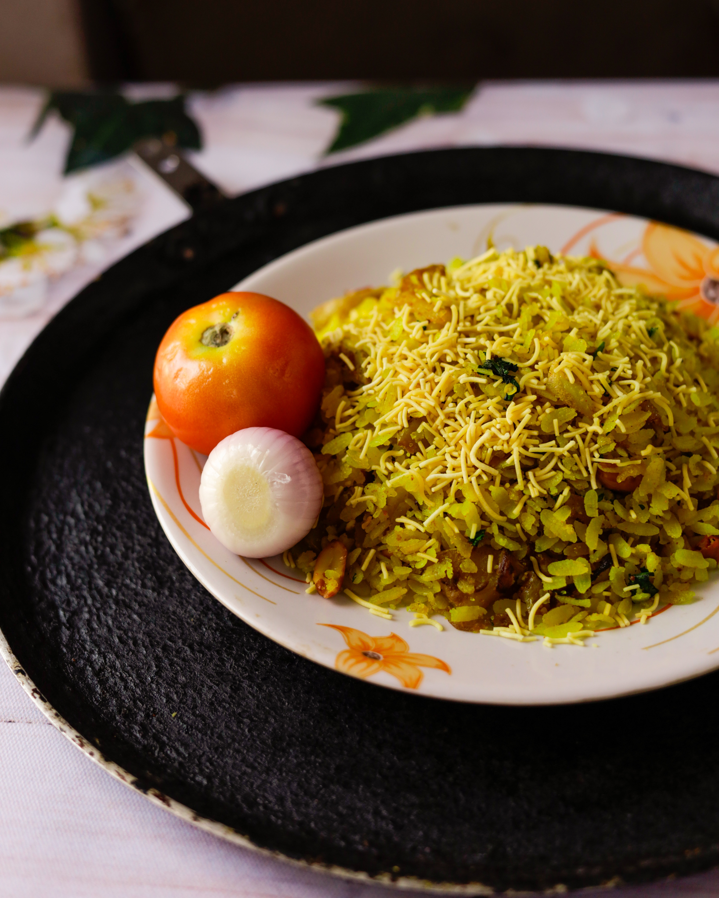
Calorie Chart for Indian Vegetables
Bottle gourd 100 gm 11
Ridge gourd 100 gm 13
Bitter gourd 100 gm 21
Capsicum 100 gm 16
Fenugreek leaves (cooked) 100 gm 34
Radish leaves 100 gm 26
Spinach 100 gm 24
Pumpkin 100 gm 23
Zucchini 100 gm 20
Drumsticks 100 gm 67
Tomato 100 gm 21
Sprouts 100 gm 44
French beans 100 gm 24
Kidney beans 1 cup 337
Soya beans 1 cup 446
Beans 1 cup 40
Peas 1 cup 118
Lady’s finger 1 cup 150
Cabbage 1 cup 60
Cauliflower 1 cup 150
Broccoli 1 cup 40
Brinjal 1 cup 40
Cottage cheese 100 gm 258
Palak paneer 1 cup 280
Fried potato 1 cup 200
Mashed potatoes 1 cup 100
Sweet potato 1 cup 96
Mushrooms 1 cup 296
Mixed Veggies 1 cup 80
Vegetable Curry 1 cup 130
Calorie Chart for Indian Vegetables
Bottle gourd 100 gm 11
Ridge gourd 100 gm 13
Bitter gourd 100 gm 21
Fenugreek leaves (cooked) 100 gm 34
Radish leaves 100 gm 26
Radish leaves 100 gm 26
Spinach 100 gm 24
Pumpkin 100 gm 23
Zucchini 100 gm 20
Drumsticks 100 gm 67
Tomato 100 gm 21
Indian Food is healthy?
Indian food can be healthy because it's made from fresh ingredients, uses spices with medicinal properties, and is less processed than Western food. Indian food is known for its variety of dishes, which can include vegetables, legumes, and spices. Some of the healthiest foods in Indian cuisine include:
Lentils, Millet, Tomatoes, Ginger, Turmeric, Cinnamon, Sweet potato, and Spinach
 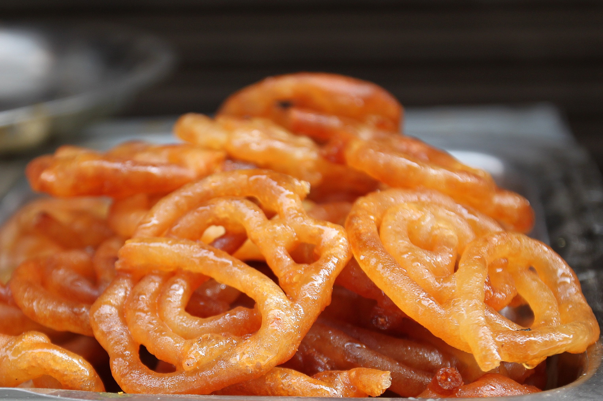
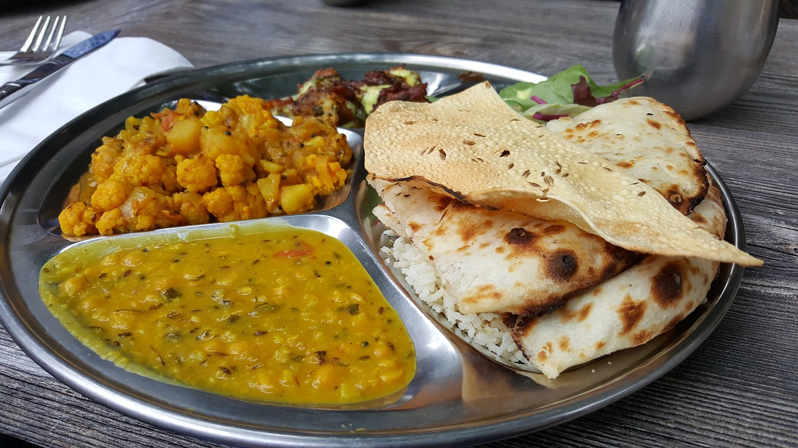
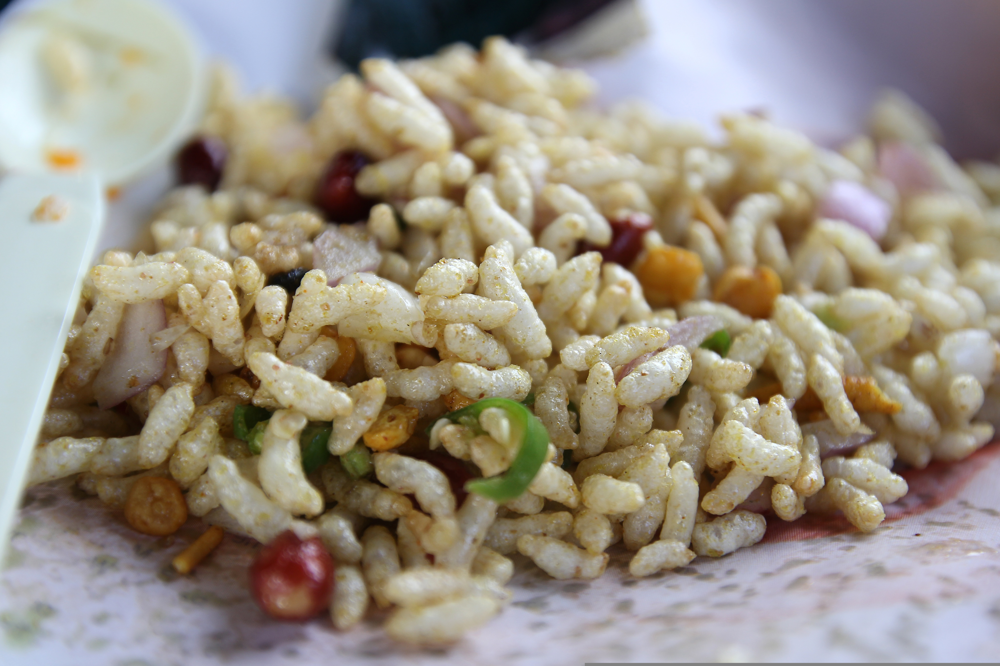
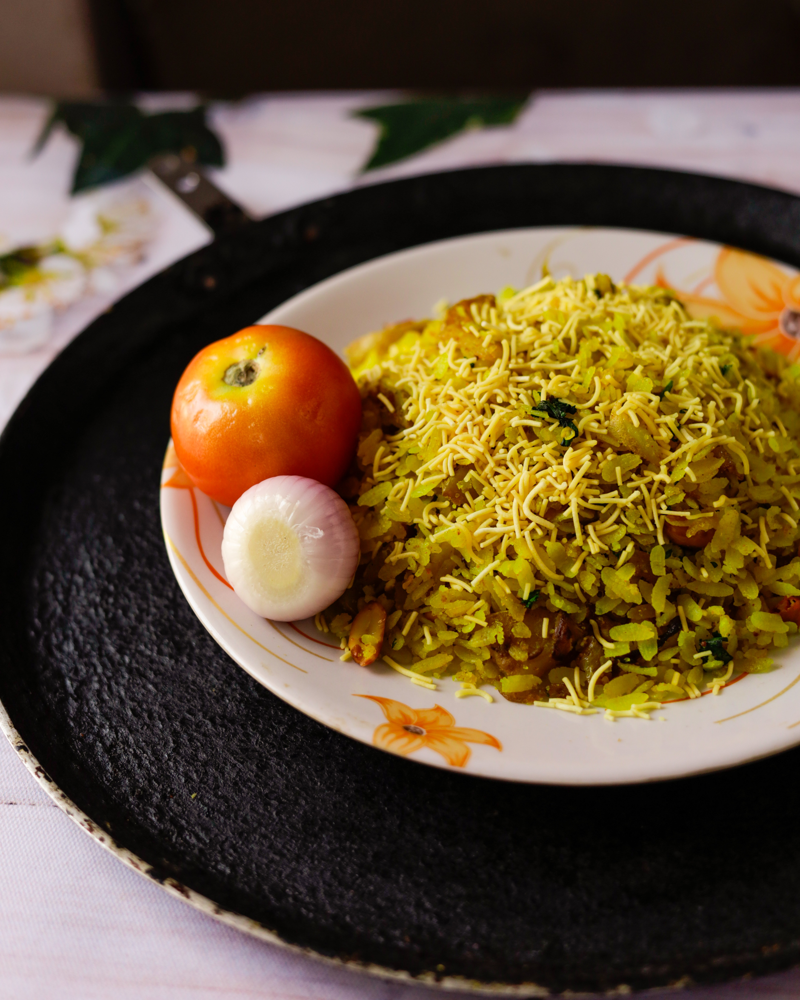
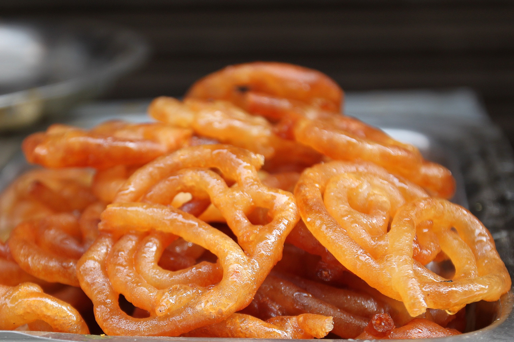
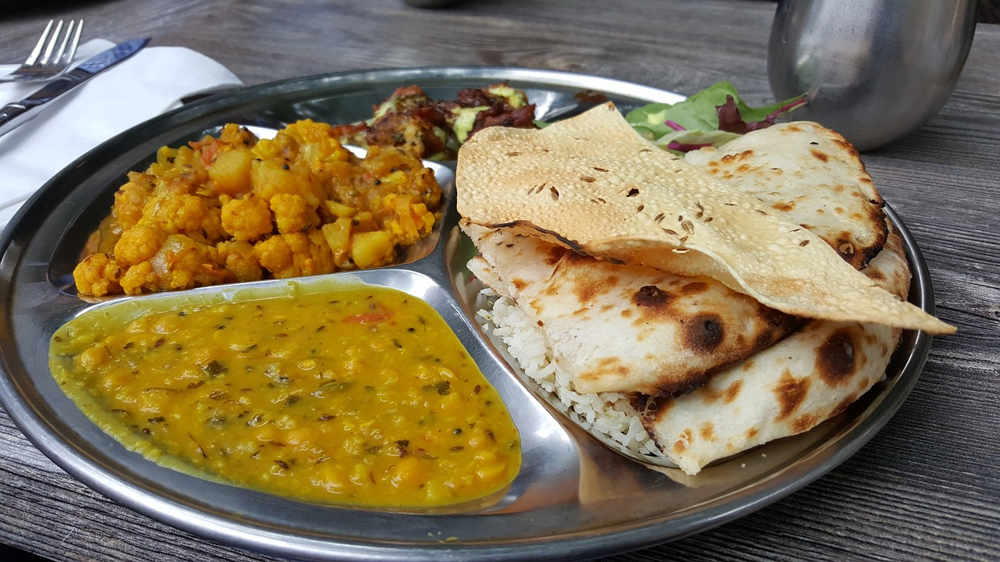
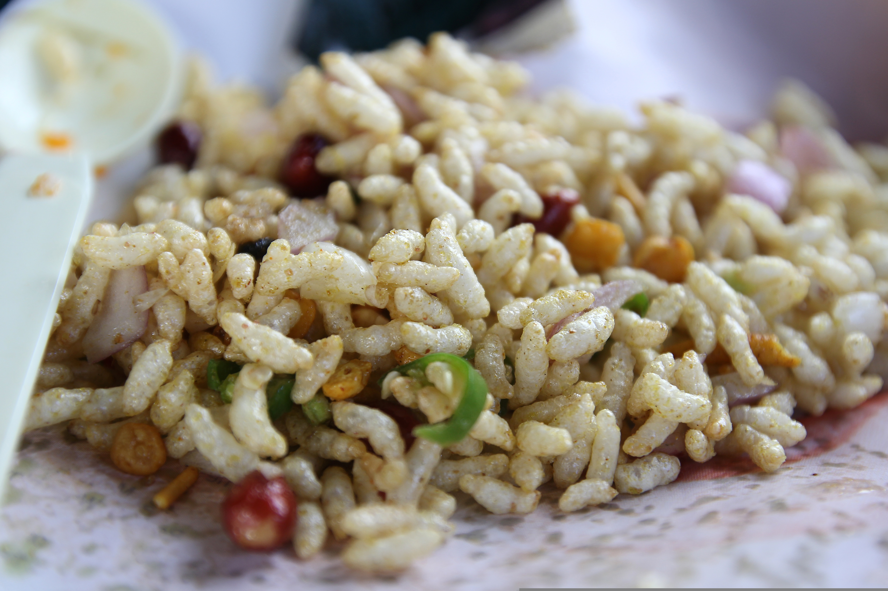
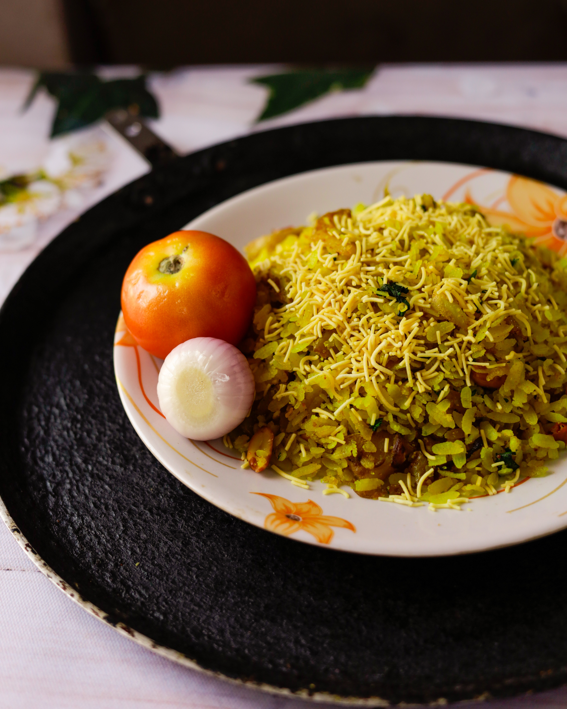